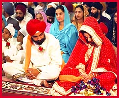

Sikh Wedding


"They are not said to be husband and wife, who merely sit together. Rather they alone are called husband and wife, who have one soul in two bodies." (Guru Amar Das, Pauri, pg. 788)
The Story Unfolds
Although there may be some minor differences in the regional customs
leading up to the religious ceremony and following the ceremony, there
is very little variance in the actual Anand Karaj ceremony in the Gurdwara.
The Sikh wedding presented here is a typical example of a traditional
Sikh wedding being performed in a North American context. You can either
proceed through it sequentially watching the events unfold or jump to
any particular section.
Anand Karaj - A Union of Two Souls
Anand Karaj is the prescribed form of Sikh marriage, the words literally translate as 'Blissful Union". The Sikh marriage is a very special ceremony in which two individuals are joined in a equal partnership. It is joyous and festive event which is very family orientated and informal in it's atmosphere. Sikh marriages are usually arranged with families acting as little more than introduction services. The ultimate choice is always left to the girl and boy. In some cases the boy and girl choose each other first and then seek their parents consent and blessing.
The Rehat Maryada which is The Official Sikh Code of Conduct specifies that no thought should be given to the perspective spouses caste, race or lineage. As long as both the boy and girl profess the Sikh faith and no other faith they may be joined in wedlock by the Anand Karaj ceremony. The Rehat Maryada strictly forbids any sort of dowry arrangement as marriage is not to be viewed as a business transaction. Sikhs are also discouraged from consulting horoscopes or following any other superstitions pertaining to determining a wedding date or time. The Anand Karaj ceremony can be performed in any Gurdwara or home where Sri Guru Granth Sahib has been respectfully installed. The religious ceremony cannot be performed in a hotel or banquet hall. There are no restrictions as to what time the ceremony should start or what time it should end although they are usually performed in the morning with the religious ceremony taking no more than a few hours.
An engagement ceremony called the kurmai is not required but is sometimes performed typically one week before the wedding. It is usually conducted in the Gurdwara or at the home of the boy. It involves Ardas (the common Sikh prayer), Kirtan (hymns from Sri Guru Granth Sahib) and langer (common meal) if performed in the Gurdwara. If performed at home, the brides family visit the house of the groom for a short time. In both cases the groom is usually presented him with a kara, kirpan or Indian sweets. They brides family in turn are presented with a Indian suit and sweets for the girl.
In the east marriages are typically a three day affair which begins with the Braat (grooms family and friends) setting off for the girls house in the evening. They are received, entertained and hosted by the girls family and spend the night at her house. The following day the ceremony takes place at the local Gurdwara or at the girls home. Following the religious ceremony festivities, song and dance continue the remainder of the day with the groom and his family departing with the bride the following day. In the west because of the constraints in time and difficulty in coordinating so many people, wedding are usually a one or two day affair. Either the wedding occurs in the morning followed by a dinner and dance banquet in a hall or hotel at night, or the religious ceremony and banquet take place on consecutive days. In rarer cases only the religious ceremony takes place without any banquet.